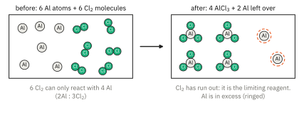
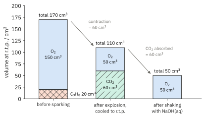
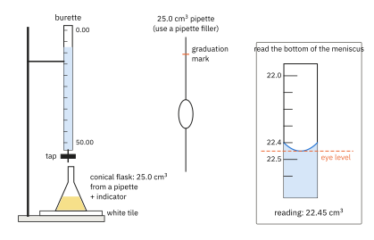
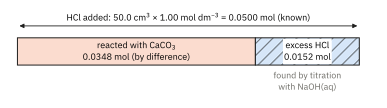

Topic 6 · The Mole Concept and Stoichiometry Part 2
The Mole Concept and Stoichiometry 2
On this page
Balanced equations
A balanced equation tells you two things. First, atoms are neither created nor destroyed: there must be the same number of atoms of each element on both sides. Second, the coefficients give the mole ratio in which the substances react and are formed. Every calculation in this Part depends on that ratio, so the equation must be right before you start.
C3H8(g) + 5O2(g) → 3CO2(g) + 4H2O(l)
reads: 1 mol of propane reacts with 5 mol of oxygen to form 3 mol of carbon dioxide and 4 mol of water. State symbols, (s), (l), (g) and (aq), should always be included.
Balancing by inspection
- Write the correct formula of every reactant and product. Never change a formula to make an equation balance; change only the coefficients in front.
- Balance the element that appears in the fewest formulae first. In a combustion, balance C, then H, and leave O until last.
- Balance any polyatomic ion that stays intact (SO42−, NO3−) as a single unit.
- If you need a half (e.g. 13/2 O2), multiply every coefficient by 2 at the end.
- Check every element, and the charge if there are ions.
For butane: C4H10 + ?O2 → 4CO2 + 5H2O. On the right there are 4(2) + 5(1) = 13 O atoms, so 13/2 O2 are needed. Doubling everything:
2C4H10(g) + 13O2(g) → 8CO2(g) + 10H2O(l)
The same reasoning gives the general equation for the complete combustion of any hydrocarbon, which you will use for gas volumes later on:
CxHy + (x + y/4)O2 → xCO2 + (y/2)H2O
(Each C needs one O2 to become CO2; every 4 H need one O2 to become 2H2O.)
Ionic equations
An ionic equation shows only the species that actually change. Ions that are present in solution at the start and are still there, unchanged, at the end are spectator ions and are left out (Topic 4 Part 1). To write one:
- Write the balanced full equation with state symbols.
- Split into ions only the substances that are both soluble and fully ionised in water: strong acids, soluble ionic salts and alkalis, all (aq).
- Leave solids, liquids, gases, water and weak acids as formulae.
- Cancel the ions that appear unchanged on both sides. Check that both atoms and charge balance.
| Full equation | Ionic equation |
|---|---|
| HCl(aq) + NaOH(aq) → NaCl(aq) + H2O(l) | H+(aq) + OH−(aq) → H2O(l) |
| AgNO3(aq) + NaCl(aq) → AgCl(s) + NaNO3(aq) | Ag+(aq) + Cl−(aq) → AgCl(s) |
| CaCO3(s) + 2HCl(aq) → CaCl2(aq) + H2O(l) + CO2(g) | CaCO3(s) + 2H+(aq) → Ca2+(aq) + H2O(l) + CO2(g) |
In the last example CaCO3 stays as a formula because it is a solid. Later in this Part you will meet ionic equations for redox reactions, such as the reaction of manganate(VII) ions with iron(II) ions. For now these will be given to you; constructing them from half-equations is Topic 12. Using a given equation is exactly the same as using any other: read the mole ratio from the coefficients.
Reacting masses
Worked example 1
Iron is extracted from iron(III) oxide by reduction with carbon monoxide. Calculate the mass of iron that can be obtained from 1.00 kg of iron(III) oxide.
Fe2O3(s) + 3CO(g) → 2Fe(s) + 3CO2(g)
Mr(Fe2O3) = 2(55.8) + 3(16.0) = 159.6, so n(Fe2O3) = 1000 g / 159.6 g mol−1 = 6.266 mol
(From the equation, 1 mol of Fe2O3 gives 2 mol of Fe.)
n(Fe) = 2 × 6.266 = 12.53 mol, so mass of Fe = 12.53 × 55.8 = 699 g
Notice the mass has gone down from 1000 g to 699 g even though no iron was lost: the rest of the mass was oxygen. The ratio in the equation is a ratio of moles, not of masses.
Limiting reagent and percentage yield
Reactants are rarely mixed in exactly the ratio of the equation. The reactant that is completely used up is the limiting reagent: it decides how much product forms. The others are in excess, and some of each is left over (Fig 1).

Worked example 2
5.40 g of aluminium is heated in 14.2 g of chlorine. (a) Which reactant is limiting? (b) Calculate the mass of aluminium chloride formed and the mass of the reactant left over. (c) Only 15.0 g of aluminium chloride was collected. Calculate the percentage yield.
2Al(s) + 3Cl2(g) → 2AlCl3(s)
(a) n(Al) = 5.40 / 27.0 = 0.200 mol; n(Cl2) = 14.2 / 71.0 = 0.200 mol
(The moles are equal, but that does not make them both ‘just enough’. Check against the ratio.) 0.200 mol of Al needs 0.200 × 3/2 = 0.300 mol of Cl2, but only 0.200 mol is present. So Cl2 is the limiting reagent and Al is in excess.
(b) Work from the limiting reagent: n(AlCl3) = 0.200 × 2/3 = 0.1333 mol
Mr(AlCl3) = 27.0 + 3(35.5) = 133.5, so mass of AlCl3 = 0.1333 × 133.5 = 17.8 g
Al used = 0.1333 mol, so Al left = 0.200 − 0.1333 = 0.0667 mol = 0.0667 × 27.0 = 1.80 g
(c) The 17.8 g is the theoretical yield, the most that could form. The actual yield is what you collect.
percentage yield = (actual yield / theoretical yield) × 100 = (15.0 / 17.8) × 100 = 84.3 %
Yields fall below 100 % because the reaction may not go to completion (or reaches equilibrium), side reactions use up some of the reactants, and product is lost on transfer, filtration and purification.
Do not confuse percentage yield with percentage purity, which describes a sample rather than a reaction:
percentage purity = (mass of the pure substance in the sample / mass of the sample) × 100
Volumes of gases
Avogadro’s Law (Topic 3 Part 1) says that equal volumes of all gases at the same temperature and pressure contain the same number of molecules. It follows that one mole of any gas has the same volume, the molar volume, Vm, at a given temperature and pressure. From the Data Booklet:
| Conditions | Temperature and pressure | Vm |
|---|---|---|
| r.t.p. (room temperature and pressure) | 293 K, 101 325 Pa | 24 dm3 mol−1 |
| s.t.p. (standard temperature and pressure) | 273 K, 105 Pa | 22.7 dm3 mol−1 |
| anything else | T, p | use pV = nRT |
A second, very useful consequence: for gases at the same temperature and pressure, the volume ratio is the mole ratio. You can then work in volumes directly, without converting to moles. For example, 50 cm3 of ethane, 2C2H6(g) + 7O2(g) → 4CO2(g) + 6H2O(l), needs 50 × 7/2 = 175 cm3 of oxygen and forms 100 cm3 of carbon dioxide, all measured at the same T and p.
Worked example 3
Calculate the volume of carbon dioxide, measured at r.t.p., formed when 10.0 g of calcium carbonate reacts with excess hydrochloric acid.
CaCO3(s) + 2HCl(aq) → CaCl2(aq) + H2O(l) + CO2(g)
n(CaCO3) = 10.0 / 100.1 = 0.0999 mol = n(CO2) (1 : 1 ratio)
V(CO2) = 0.0999 mol × 24 dm3 mol−1 = 2.40 dm3
Burning hydrocarbons
A classic problem: a small volume of a gaseous hydrocarbon is exploded with excess oxygen; the gases are cooled back to the starting conditions, and then shaken with aqueous sodium hydroxide. The volume is measured at each stage. Three facts make it work:
- At r.t.p. the water formed condenses to a liquid, whose volume is negligible. So on cooling the total volume contracts.
- NaOH(aq) absorbs carbon dioxide, 2NaOH(aq) + CO2(g) → Na2CO3(aq) + H2O(l), so the fall in volume on shaking = volume of CO2.
- The gas left at the end is the unused oxygen, so O2 used = O2 added − O2 left.
Worked example 4
20 cm3 of propane is exploded with 150 cm3 of oxygen (an excess). All volumes are measured at r.t.p. Find the volume (a) after cooling and (b) after shaking with NaOH(aq).
| C3H8(g) | + 5O2(g) | → 3CO2(g) | + 4H2O(l) | |
|---|---|---|---|---|
| volume ratio | 1 | 5 | 3 | 4 (liquid) |
| at start / cm3 | 20 | 150 | 0 | 0 |
| change / cm3 | −20 | −100 | +60 | negligible |
| after cooling / cm3 | 0 | 50 | 60 | negligible |
(a) Volume after cooling = 50 + 60 = 110 cm3 (a contraction of 170 − 110 = 60 cm3)
(b) NaOH(aq) removes the 60 cm3 of CO2, leaving 50 cm3 of oxygen. Fig 2 shows the three stages.

Worked example 5: finding the formula
10 cm3 of a gaseous hydrocarbon, CxHy, was exploded with 70 cm3 of oxygen (an excess). After cooling to r.t.p. the volume was 55 cm3. After shaking with NaOH(aq) the volume was 25 cm3. Find the formula of the hydrocarbon.
(Write the general equation with the volumes underneath; then use one reading for each unknown.)
| CxHy(g) | + (x + y/4)O2(g) | → xCO2(g) | + (y/2)H2O(l) | |
|---|---|---|---|---|
| volume / cm3 | 10 | 10(x + y/4) | 10x | negligible |
Volume of CO2 = 55 − 25 = 30 cm3 = 10x, so x = 3
O2 left = 25 cm3, so O2 used = 70 − 25 = 45 cm3 = 10(x + y/4)
x + y/4 = 4.5, so y/4 = 1.5 and y = 6
The hydrocarbon is C3H6 (propene or cyclopropane). Check with the contraction: (10 + 70) − 55 = 25 cm3, and from the equation the contraction = 10 + 10(x + y/4) − 10x = 10(1 + y/4) = 25 cm3, which agrees.
Solutions and concentration
The concentration of a solution is the amount of solute per unit volume of solution:
with c in mol dm−3, n in mol and V in dm3 (divide cm3 by 1000). Rearranged, n = c × V is the route from a solution into the mole map. Concentration can also be given in g dm−3: mass concentration = c × M.
Example. 2.00 g of NaOH is dissolved in water and made up to 250 cm3. n = 2.00 / 40.0 = 0.0500 mol, so c = 0.0500 / 0.250 = 0.200 mol dm−3 (or 8.00 g dm−3).
Dilution
Adding water changes the volume but not the amount of solute, so c1V1 = c2V2. Making 25.0 cm3 of 2.00 mol dm−3 acid up to 250 cm3 gives c2 = (2.00 × 25.0) / 250 = 0.200 mol dm−3: a tenfold dilution. (Here the volume units cancel, so cm3 can be used on both sides.)
Standard solutions
A standard solution is one whose concentration is accurately known. To prepare one from a solid:
- Weigh the solid accurately into a weighing bottle; tip it into a beaker and reweigh the bottle (weighing by difference).
- Dissolve the solid in a small volume of deionised water in the beaker, stirring with a glass rod.
- Transfer the solution through a funnel into a volumetric flask (e.g. 250.0 cm3). Rinse the beaker, rod and funnel with deionised water and add all the rinsings to the flask.
- Add deionised water until the bottom of the meniscus is on the graduation mark, the last few drops with a dropper, with the mark at eye level.
- Stopper the flask and invert it several times to mix.
The solid must be pure, stable in air and not absorb water. Anhydrous sodium carbonate is suitable. Sodium hydroxide is not: it absorbs water and carbon dioxide from the air, so NaOH solutions are made up roughly and then standardised by titration.
Titrations
In a titration, a solution of known concentration is added from a burette to a measured volume of another solution until the reaction is just complete, the end point, shown by a colour change. From the volume used (the titre) and the equation, the unknown can be calculated. Fig 3 shows the apparatus.

Technique
- Rinse the pipette with the solution it will measure, and the burette with the solution it will hold. Rinse the conical flask with deionised water only: extra water does not change the amount of substance in it.
- Run some solution through the tap so the tip is full and has no air bubble, and remove the funnel before reading.
- Read the bottom of the meniscus at eye level, to the nearest 0.05 cm3, and record every reading to 2 decimal places. (For a dark solution such as KMnO4, read the top of the meniscus.)
- Swirl the flask throughout, over a white tile, and add the last drops one at a time.
- Do a rough titration first, then accurate ones until you have two or more concordant titres: within 0.10 cm3 of each other. Average only the concordant titres.
Worked example 6: a direct acid-base titration
25.0 cm3 of sodium hydroxide solution was titrated with 0.100 mol dm−3 sulfuric acid, using methyl orange as indicator (yellow to orange at the end point). Calculate the concentration of the sodium hydroxide.
| Rough | 1 | 2 | 3 | |
|---|---|---|---|---|
| final reading / cm3 | 23.10 | 45.60 | 22.45 | 45.00 |
| initial reading / cm3 | 0.00 | 23.10 | 0.00 | 22.45 |
| titre / cm3 | 23.10 | 22.50 | 22.45 | 22.55 |
Titres 1, 2 and 3 are concordant (within 0.10 cm3); mean = (22.50 + 22.45 + 22.55) / 3 = 22.50 cm3.
2NaOH(aq) + H2SO4(aq) → Na2SO4(aq) + 2H2O(l)
n(H2SO4) = 0.100 × (22.50 / 1000) = 2.250 × 10−3 mol
n(NaOH) = 2 × 2.250 × 10−3 = 4.500 × 10−3 mol in 25.0 cm3
[NaOH] = (4.500 × 10−3) / (25.0 × 10−3) = 0.180 mol dm−3
Back titration
Sometimes the substance cannot be titrated directly: it is an insoluble solid (CaCO3, an antacid tablet), it reacts too slowly for a sharp end point, or it is volatile (NH3). Instead, a known excess of a reagent is added, and the amount left over is found by titration. The amount that reacted is found by difference (Fig 4).

Worked example 7
2.00 g of impure calcium carbonate (the impurities do not react with acid) was added to 50.0 cm3 of 1.00 mol dm−3 hydrochloric acid, an excess. When the reaction was over, the solution was made up to 250.0 cm3 with deionised water. 25.0 cm3 portions of this solution needed a mean titre of 15.20 cm3 of 0.100 mol dm−3 sodium hydroxide (methyl orange, red to orange). Calculate the percentage purity of the calcium carbonate.
(Work backwards from the titration to the excess, then subtract from the total.)
n(NaOH) = 0.100 × (15.20 / 1000) = 1.520 × 10−3 mol = n(HCl left) in 25.0 cm3 (NaOH + HCl, 1 : 1)
n(HCl left) in 250 cm3 = 10 × 1.520 × 10−3 = 0.01520 mol
n(HCl added) = 1.00 × (50.0 / 1000) = 0.0500 mol
n(HCl reacted) = 0.0500 − 0.01520 = 0.03480 mol
CaCO3(s) + 2HCl(aq) → CaCl2(aq) + H2O(l) + CO2(g), so n(CaCO3) = 0.03480 / 2 = 0.01740 mol
mass of CaCO3 = 0.01740 × 100.1 = 1.742 g
percentage purity = (1.742 / 2.00) × 100 = 87.1 %
Redox titrations (Further example)
Potassium manganate(VII) oxidises iron(II) ions in acid solution. The ionic equation is given:
MnO4−(aq) + 5Fe2+(aq) + 8H+(aq) → Mn2+(aq) + 5Fe3+(aq) + 4H2O(l)
Check that it balances: atoms (1 Mn, 4 O, 5 Fe, 8 H each side) and charge ((−1) + 5(+2) + 8(+1) = +17 on the left; (+2) + 5(+3) = +17 on the right). The KMnO4 is in the burette and the iron(II) solution, acidified with excess dilute sulfuric acid, is in the flask. No indicator is needed: the purple MnO4− is decolourised as long as Fe2+ remains, and the end point is the first permanent pale pink.
Worked example 8
An iron tablet of mass 0.500 g was dissolved in dilute sulfuric acid and the solution made up to 100.0 cm3. 25.0 cm3 portions needed a mean titre of 9.60 cm3 of 0.0100 mol dm−3 KMnO4. Calculate the percentage by mass of iron in the tablet.
n(MnO4−) = 0.0100 × (9.60 / 1000) = 9.60 × 10−5 mol
n(Fe2+) in 25.0 cm3 = 5 × 9.60 × 10−5 = 4.80 × 10−4 mol; in 100.0 cm3: 4 × 4.80 × 10−4 = 1.92 × 10−3 mol
mass of Fe = 1.92 × 10−3 × 55.8 = 0.107 g; percentage of iron = (0.1071 / 0.500) × 100 = 21.4 %
Iodometric titrations (Further example)
Many oxidising agents are measured indirectly. The oxidising agent is added to excess potassium iodide, which it oxidises to iodine; the iodine is then titrated with standard sodium thiosulfate:
I2(aq) + 2S2O32−(aq) → 2I−(aq) + S4O62−(aq)
The brown iodine fades to pale yellow as thiosulfate is added. A few drops of starch are then added, giving a blue-black colour, and the end point is when the blue-black colour just disappears. Starch is added near the end, not at the start, because a lot of iodine binds strongly to starch and is slow to react.
Worked example 9
25.0 cm3 of copper(II) sulfate solution was added to excess KI(aq). The iodine liberated needed 20.00 cm3 of 0.100 mol dm−3 sodium thiosulfate. Calculate the concentration of Cu2+.
2Cu2+(aq) + 4I−(aq) → 2CuI(s) + I2(aq)
(Chain the two equations: 2Cu2+ gives 1I2, which needs 2S2O32−. So Cu2+ : S2O32− = 1 : 1.)
n(S2O32−) = 0.100 × (20.00 / 1000) = 2.000 × 10−3 mol = n(Cu2+)
[Cu2+] = (2.000 × 10−3) / (25.0 × 10−3) = 0.0800 mol dm−3
At the end point here, the blue-black colour disappears to leave an off-white (cream) precipitate of CuI.
Deducing stoichiometry
The calculations can also be run in reverse: measure the amounts that react, and deduce the equation.
Worked example 10
(a) 25.0 cm3 of a 0.100 mol dm−3 solution of an acid, HxA, needed 37.50 cm3 of 0.200 mol dm−3 NaOH for complete neutralisation. Deduce x. (b) 0.243 g of magnesium reacted with excess hydrochloric acid to give 240 cm3 of hydrogen at r.t.p. Deduce the mole ratio of Mg to H2.
(a) n(acid) = 0.100 × 0.0250 = 2.50 × 10−3 mol; n(NaOH) = 0.200 × 0.03750 = 7.50 × 10−3 mol
Ratio NaOH : acid = 7.50 × 10−3 : 2.50 × 10−3 = 3 : 1, so each acid molecule gives 3 H+: x = 3 (a tribasic acid, such as H3PO4).
(b) n(Mg) = 0.243 / 24.3 = 0.0100 mol; n(H2) = 0.240 / 24 = 0.0100 mol
Ratio Mg : H2 = 1 : 1, consistent with Mg(s) + 2HCl(aq) → MgCl2(aq) + H2(g).
Worked example 5 above is the same idea for gases: the volumes gave the ratio of C to H in the hydrocarbon.